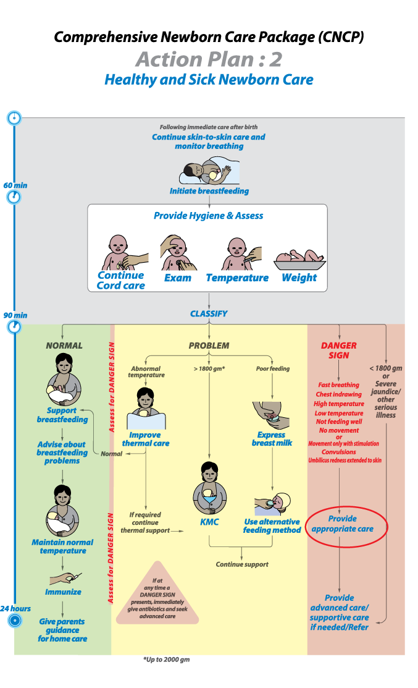

Pic: Action Plan# 2.18
Infection is one of the leading causes of neonatal death. A baby with a danger sign is at risk of death and therefore, needs urgent antibiotic treatment and appropriate care. Ampicillin and Gentamicin together, or the alternate recommended antibiotics are often needed to treat infections.
The first dose of antibiotics should be given as soon as possible after identifying the danger sign because early treatment may improve outcome.
The dose will depend on the weight of the baby and the specific antibiotics that will be used; if possible, sepsis workup should be obtained before antibiotics are administered.